这一章主要讲80x86处理器寻址芯片的细节，以及Linux是如何使用这些硬件芯片的。
Memory Addresses(内存地址)
80x86处理器将内存地址分为3类：
- Logical address:在机器指令中使用的地址，包括段地址和偏移。
- Linear address:又叫虚拟地址，32位二进制数字，可寻址4GB，范围为0x00000000-0xffffffff
- Physical address:最终处理器地址引脚发送的地址,可能为32位或者36位。
处理器对地址的处理，首先MMU中的段单元，将逻辑地址转换为线性地址，然后页单元，将线性地址转换为物理地址。
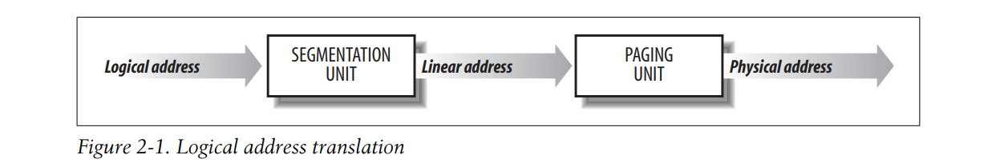
分段可给每个进程分配不一样的线性地址空间，比如进程A和进程B的代码段，分配不一样的虚拟/线性地址空间 而分页可使得不同进程的同一线性地址空间，映射到不同的物理地址空间。 如果我们只需要对进程的物理地址空间做分隔，使得不同进程的物理地址空间互不干扰，只需要使用分页功能就可以了，不同进程的线性地址空间可以是一样的。 当然，仅仅使用分段也可以对进程使用的物理地址空间做分隔，分段和分页的功能，本质上是重复的。 所以，Linux系统基本没有使用分段的功能。在Linux下，每个进程的虚拟地址空间都是一样的，0-4GB
从80286开始，Intel处理器对地址的翻译，有2种方式，real mode和protected mode. real mode模式的存在，主要是为了1是跟老的处理器型号兼容，2是用于是系统加载(allow the operating system to bootstrap). real mode模式不需要经过段单元和页单元的地址翻译，直接访问指定的内存
Segmentation in Hardware
每个程序的代码，数据可以被分成不同的段，段的起始地址，大小，访问权限等信息，存储在段描述符中。一个段描述符由8个字节描述。一个程序的所有段描述符存储在段描述符表中。这样的描述符表叫做本地段描述符表(LDT)。同时，每个cpu会有自己的一个全局段描述符表(GDT)，其中存储cpu运行需要的段的信息，比如存储所有的寄存器数据的段（TSS），存储当前进程使用的LDT的段，存储当前进程的TLS的段
80286处理器中，段单元包含的物理组件有以下
- 段描述符表基址寄存器(gdtr/ldtr)，存储本地段描述符表或者全局段描述表的基地址。
- 段寄存器，存储段选择子，段选择子用于从段描述符表中定位到具体的段描述符，从而查找到该段的基地址
- 段描述符寄存器，直接存储段描述符，这是为了加快查找的
段寄存器和段选择子
逻辑地址，实际上表示为段选择子和段偏移。
段选择子(Segment Selector)16位，偏移32位
16位段选择子的格式如下
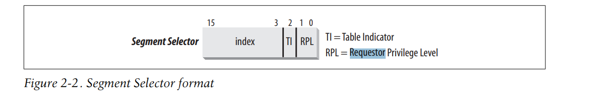
index:就是段描述符在段表中的索引 TI: 为0 表示从全局段表（GDT）中查找段描述符。为1表示从本地段表（LDT）查找段描述符。也就是要么从gdtr/ldtr中获取段表基地址 RPL:requestor privilege level.访问该段的请求者的特权级，为0表示需要kernel mode,为3表示任意的CPU level都可以访问段选择子存储在段寄存器中，包括cs,ss,ds,es,fs,gs寄存器。 cs:代码段选择子 ss:栈段选择子 ds:数据段选择子 其他是通用段选择子寄存器
段描述符
每个段由8个字节的段描述符描述，其中主要包括段基地址，段大小等信息。 段描述符存储在段描述符表中，有2种段描述符表，Global Descriptor Table (GDT) ，Local Descriptor Table (LDT). GDT只有一张，而每个进程可以有自己的LDT.GDT的地址存储在gdtr控制寄存器中，而当前使用的LDT的地址存储在ldtr中
8字节的段描述符中，各字段的意义如下：
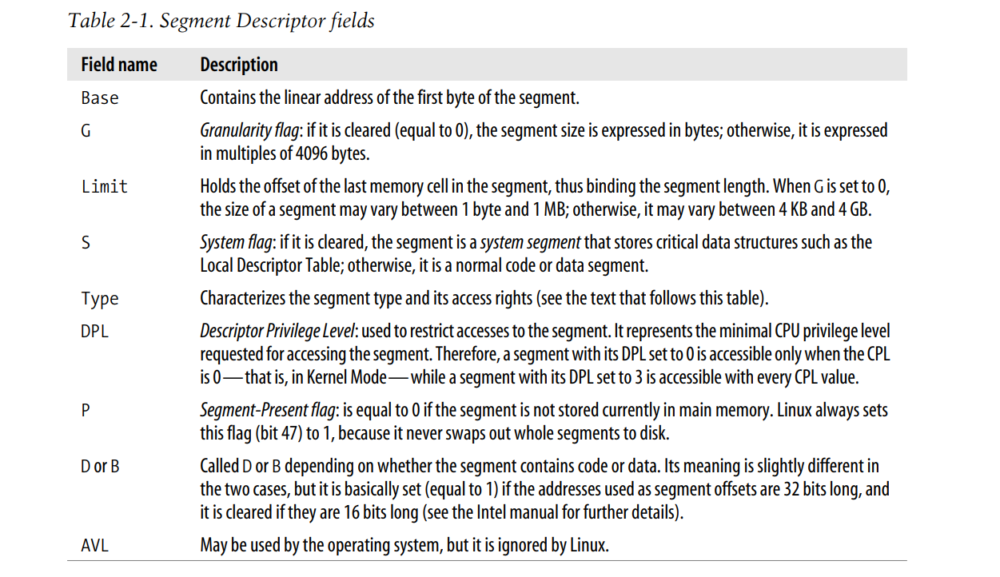
段的种类有好几种，因此也有好几种段描述符，Linux中通常使用以下几种：
- Code Segment Descriptor：代码段描述符
- Data Segment Descriptor：数据段描述符
- Task State Segment Descriptor (TSSD)：TSS段描述符，Task State Segment (TSS)，该段用来存储处理器寄存器的内容。该段描述符只能存储在GDT中。描述符的Type字段，值要么为11，要么为9，depending on whether the corresponding process is currently executing on a CPU. S字段为0
- Local Descriptor Table Descriptor (LDTD)：该段用来存储LDT，该段描述符只能存储在GDT中，Type字段值是2，S字段为0
段描述符寄存器
逻辑地址由16位的segment selector和32位的偏移组成，其中segment selector存储在可编程的6个段寄存器中。每次从逻辑地址转换到线性地址，都需要通过段选择子找到段描述符，再通过段描述符中的段基地址，组合段偏移，才能最终转换成线性地址。
下图展示了，一个逻辑地址是如何被转换为线性地址的，这个转换操作是segmentation unit执行的。
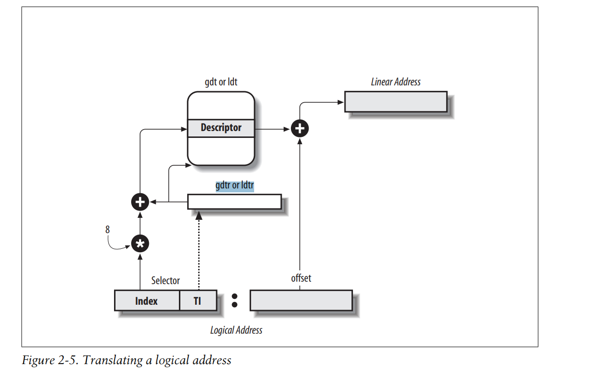
- Examines the TI field of the Segment Selector to determine which Descriptor Table stores the Segment Descriptor. This field indicates that the Descriptor is either in the GDT (in which case the segmentation unit gets the base linear address of the GDT from the gdtr register) or in the active LDT (in which case the segmentation unit gets the base linear address of that LDT from the ldtr register).
- Computes the address of the Segment Descriptor from the index field of the Segment Selector. The index field is multiplied by 8 (the size of a Segment Descriptor), and the result is added to the content of the gdtr or ldtr register.
- Adds the offset of the logical address to the Base field of the Segment Descriptor, thus obtaining the linear address
为了加快这一转换，80x86处理器为每个段选择子寄存器又提供了一个不可编程的段描述符寄存器，其中存储的段描述符正是段选择子所对应的。 每次，当段选择子被加载到对应的段寄存器之后，段描述符也被加载到段描述符寄存器。在这之后，逻辑地址到线性地址的翻译，就不需要通过段选择子，访问到GDT或者LDT中的相应的段描述符，再通过段描述符获取段基地址。 访问GDT或者LDT，获取段描述符这一操作，只需要在段寄存器中的内容发生变化时，由cpu自主进行一次就可以了。
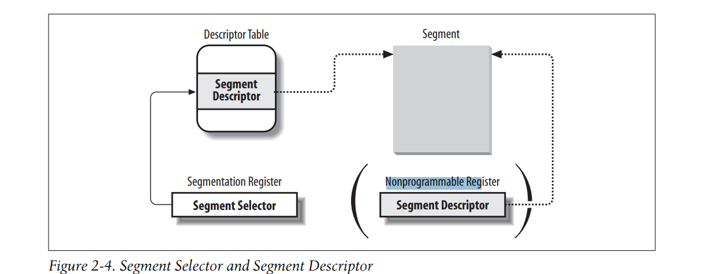
Segmentation in Linux
前面说过，Linux并不怎么使用80x86处理器提供的分段这一功能。而是使用分页分隔进程的物理地址。
- 如果所有进程使用的线性地址空间是一样的，内存管理更简单。
- Linux不仅仅可以运行在80x86上，也需要运行在别的平台上，有的平台并不支持分段。
The 2.6 version of Linux uses segmentation only when required by the 80 × 86 architecture.
Linux的内核代码中定义了如下4个段，分别是用户代码段，用户数据段，内核代码段，内核数据段。
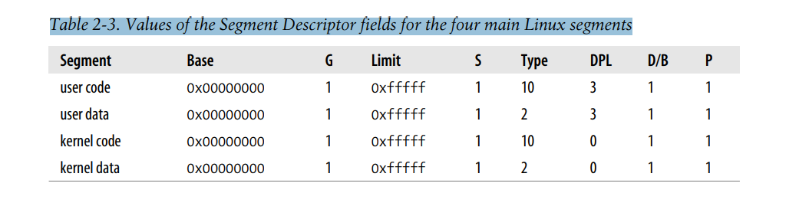
这四个段的值，分别用USER_CS, USER_DS,KERNEL_CS, and KERNEL_DS这四个宏表示。 可以看到，这四个段的段基地址都是从0开始的，段的大小都是4GB,也就是说，在Linux系统下的进程，其使用的线性地址空间，不论是内核态下还是用户态的，不管是什么段，都是一样的，从0-4GB。而且，Linux下的进程逻辑地址的偏移量就等于转换后的线性地址。The Linux GDT
单处理器系统中，GDT只有一个，多处理器系统中，每个cpu一个GDT。在内核代码中，所有的GDT都存储在cpu_gdt_table这个数组中，而所有GDT的地址，用来加载到gdtr寄存器中的数据，存储在cpu_gdt_descr这个数组中。
GDT中比较重要的段描述符有：
- Four user and kernel code and data segments。
- 一个TSS段描述符。TSS段的线性地址空间是kernel data 段的一小部分，TSS段被顺序存储在
init_tss数组中，第n个CPU的TSS段描述符中的BASE字段，存储的地址是init_tss第n个元素的地址。TSS段描述符中G字段被清空，代表大小的单位是字节，Limit字段的值是0xeb，也就是TSS段大小为236个字节。Type字段是9或者11，DPL是0，只能内核模式访问TSS段 - 存储LDT段的段描述符。
- 3个TLS段的段描述符。set_thread_area()和get_thread_area()这两个系统调用，分别为当前进程创建和释放TLS段
- 其他
每个cpu都有自己的GDT,其中存储的段描述符，大部分都是一样的，比如存储kernel data,kernel code,user data,user code的段。有些是不一样的，比如每个处理器都有自己的TSS段，因此是不一样的。还有存储LDT段的段描述符，其指向的段，其中存储的LDT是当前进程的LDT。但是通常linux用户进程不会使用LDT,因此其LDT是系统默认定义的，所有进程共享。所以大部分情况下，每个cpu的GDT中，LDT段描述符是一样的。还有TLS段，也是跟当前进程相关
The Linux LDTs
大部分Linux用户程序都不会使用LDT,因此，kernel定义了一个默认的LDT，供所有的进程共享。
Paging in Hardware
MMU中的页单元，将线性地址转换为物理地址。其中一个主要任务是检查这次地址访问是否有效，如果无效，则会生成页错误异常。
线性地址单元被分页，一页大小的连续线性地址与一页大小的连续物理地址对应。 页单元将所有的RAM都以页大小划分为物理页。物理页又叫做页框（page frame）
将线性地址与物理地址对应的数据结构，叫做page tables,页表。页表存储在主存中，在页单元被enable之前，必须被初始化好(内核的运行也需要页表) 从80386开始，所有的x86处理器都支持分页。开启分页功能，是设置控制寄存器，cr0,中的PG flag。当PG=0,分页功能没有开启的时候，线性地址是直接翻译成物理地址的，中间不再有转换过程。
Regular Paging
从80386开始，页单元的页大小为4KB
32位的线性地址被划分为3部分
- Directory ： The most significant 10 bits
- Table ： The intermediate 10 bits
- Offset ： The least significant 12 bits
线性地址到物理地址的翻译，由2步完成，第一步使用Page Directory Table,页目录表，第二步使用Page Table,页表。 使用这种2级页表结构，目的是为了降低页表的内存使用。每个进程都有自己的页表，存储在RAM中。如果是一级页表，对于32位地址空间而言，需要2^20个页表项，如果每个页表项大小是4字节，则需要使用4MB的内存。而实际上，进程并不会使用全部的4GB虚拟地址空间，只会使用其中的部分，因此不需要全部的页表项，分成2级页表，只需要设置好实际使用的虚拟地址空间区域所对应的页表项就可以了。
页目录的物理地址，被加载到控制寄存器 cr3 中。
线性地址中的Directory field部分，决定了指向哪个页目录项，该页目录项中存储该地址区域的页表的物理地址。线性地址中的Table field部分，约定了指向哪个页表项，该页表项中存储实际物理页的物理地址。最后的偏移部分，决定了该物理页面中的偏移。
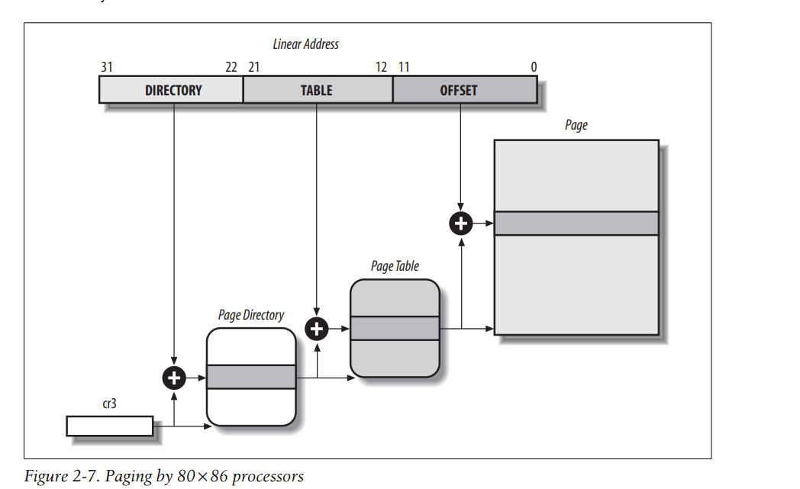
页目录和页表中的每一项，其结构是相同的，都包括如下字段
- Present flag 如果这个flag被设置了，代表该page,或者page table在内存中。如果为0，则不在内存中。当在做地址转换时，访问到的页目录项，或者页表项中，如果该标志为0，则分页单元会将该线性地址存储到cr2控制寄存器中，生成页错误异常。
- Field containing the 20 most significant bits of a page frame physical address 因为物理页大小是4KB,因此，每个物理页的地址，都是4096的倍数。也即是其低12位都是0，只需要存储剩下的高20位即可。
- Accessed flag 分页单元访问物理页面时，都会在相应的entry上，设置该标志。这个标志可能会被操作系统用来选择被换出的页面。分页单元绝不会重置该标志，只有操作系统才能重置它
- Dirty flag 这个标志，只对Page Table entries有效。当在物理页上执行写操作后，相应的entries上的该标志会被设置。同Accessed标志一样，这个标志可能被会操作系统用来选择被换出的页面。分页单元绝不会重置该标志，只有操作系统才能重置它
- Read/Write flag 包含该页面，或者该页表的读写权限。
- User/Supervisor flag Contains the privilege level required to access the page or Page Table
- PCD and PWT flags Controls the way the page or Page Table is handled by the hardware cache
- Page Size flag Applies only to Page Directory entries. If it is set, the entry refers to a 2MB/4MB long page frame
- Global flag
Applies only to Page Table entries. This flag was introduced in the Pentium Pro to prevent frequently used pages from being flushed from the TLB cache
It works only if the Page Global Enable (PGE) flag of register cr4 is set.
Extended Paging(大页面)
从奔腾开始，x86处理器就引入了extended paging。 这种分页模式，页面大小可为2MB/4MB.如图所示。
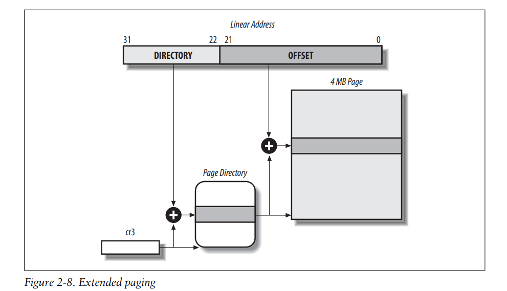
Extended paging is used to translate large contiguous linear address ranges into corresponding physical ones; in these cases, the kernel can do without intermediate Page Tables and thus save memory and preserve TLB entries之前提到过，extended paging的设置，需要将page directory entry中的Page Size flag设置。在这种情况下，分页单元将线性地址分为2部分：
- Directory The most significant 10 bits
- Offset The remaining 22 bits
extending paging中的页目录项的结构和normal paging中的基本一样，除了以下2点
- The Page Size flag must be set.
- page frame地址区域依然是20位，但是只使用最高的10位。因为物理页面大小是4MB,也就是page frame的地址，后22位都是0，只需要存储10即可。
Extended paging coexists with regular paging; it is enabled by setting the PSE flag of the cr4 processor register.
Hardware Protection Scheme
段单元的保护，是段描述符中的DPL字段，规定了访问段时，需要的cpu CPL.
页单元提供的保护，页目录项和页表项中也有User/Supervisor flag，规定了需要访问的CPL.当这个标志为0，表示需要的CPL为kernel mode.如果为1，表示user mode就可以访问
页单元除了提供CPL保护之外，页目录项和页表项中也有Read/Write flag，如果这个标志为0，则相应的页表或者页，只能被读。如果为1，则可以读写。
An Example of Regular Paging
我们假设某个进程在user mode之下，可访问的线性地址空间为0x20000000-0x2003ffff。这个地址空间大小为256KB,一共64页。也就是，只需要页目录中的一项，和一张页表中的64项。 首先看该线性地址的Directory部分，为0x80,也就是指向页目录中的第129项。相应的page directory entry中会包含所指向的page table的物理地址。如果该进程没有被分配其他的地址空间，则page directory中的剩下1023项都是0 然后看该线性地址的page table部分，范围为0-0x3f,也就是0-63项，一共64项。剩下的960项没有分配，也是0. page directory和page table如图所示
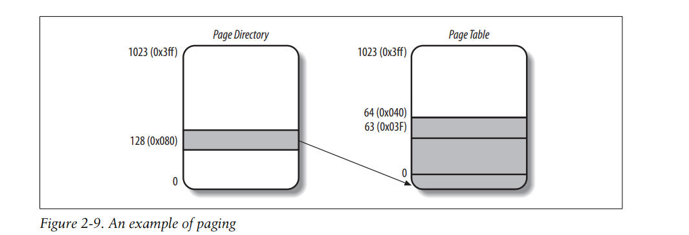
假设，现在进程要读取线性地址 0x20021406处的字节，这个地址的翻译过程如下- Directory 字段是0x80，访问Directory Table中的第129个目录项，找到相关的页表。
- Table field是0x21,也就是第33个页表项，访问到物理页。
- 最后是物理页中的偏移， 0x406，访问到该地址处的字节。
如果最后，page table中的第33项的页表项中的present flag没有设置，则这一页不在内存中，这种情况下，分页单元会issue页错误异常。 如果访问的地址不在被分配的地址空间范围中，也就是相应的页表项全为0，一样issue页错误异常。
The Physical Address Extension (PAE) Paging Mechanism
处理器所能支持的物理内存的大小，受到处理器连接到地址总线的地址引脚的数量的限制。从80386到奔腾，处理器的物理地址都是32位，因此最多支持4GB的内存。
然而，如果需要运行的进程数很多，需要的内存可能会超过4GB,处理器支持的最大内存需要拓展。如何在32bit 80x86芯片上拓展能支持的物理内存呢？
首先需要增加地址引脚的数量，从Pentium Pro开始，地址引脚从32个增加到了36个，支持的内存增加到64GB.
其次，需要新的分页机制，可以将32位的线性地址，翻译成36位的物理地址。
从奔腾pro开始，Intel提供了新的分页机制，叫做Physical Address Extension (PAE)
如果要使用PAE,需要将cr4控制寄存器的Physical Address Extension (PAE) flag设置。
同时，之前说过，page directory entry中的page size(PS)标志可增大页大小到2MB或者4MB.如果没有设置PAE,则PS为4MB,如果设置了PAE,则PS为2MB
先看以下没有设置PS时，PAE的实现
- 物理内存64GB,页大小依然是4KB,则一共有2^24个page frames,因此，不管是page directory table中的页目录项，还是page table中的页表项，其中指向的page frames的物理地址，都需要24bits了。加上12bit的各种控制位，则一个entry,需要36bit，为了对齐，不管是目录项，还是页表项，需要的空间都是64bit。那么结果就是，页表，或者目录表，其中能存储的项数，是512项
- 在page directory table之上，新增了Page Directory Pointer Table (PDPT)，其中包括4项64-bit entries，每个entry可指向page directory table。这里PDPT不需要一页的大小，只需要32bytes
- cr3控制寄存器中存储PDPT的物理地址。但是不需要36位，只需要27位。PDPT存储在RAM的前4GB中，也就是其物理地址最多需要32位，PDPT大小是32bytes,也就是最后5位为0，因此只需要存储27位即可。
总结一下
- cr3 ：Points to a PDPT
- bits 31–30 ：Point to 1 of 4 possible entries in PDPT
- bits 29–21：Point to 1 of 512 possible entries in Page Directory
- bits 20–12：Point to 1 of 512 possible entries in Page Table
- bits 11–0 ：Offset of 4-KB page
如果PS被设置了，页大小2MB,则PAE的实现如下：
- cr3：Points to a PDPT
- bits 31–30：Point to 1 of 4 possible entries in PDPT
- bits 29–21：Point to 1 of 512 possible entries in Page Directory
- bits 20–0：Offset of 2-MB page
To summarize, once cr3 is set, it is possible to address up to 4 GB of RAM. If we want to address more RAM, we’ll have to put a new value in cr3 or change the content of the PDPT. 但只有内核才能更改cr3或者更改进程的page tables. 所以，一个进程如果运行在user mode下，它能访问的物理内存最多也就是4GB. 但我们有64GB的物理内存可用，因此，系统中可以运行的进程数大大增加。
Paging for 64-bit Architectures
如果处理器是64位的，那么如果还是使用2级分页，则不管是页目录表，还是页表，其中的表项数都大大增加，浪费空间。
简单算一下，如果页大小是4KB,则线性地址偏移量占用12bit,假设我们使用48bit做线性地址，这个线性地址空间有256TB这么大，很够了。除去12bit,还有36bit。如果一二级平分，每级别18bit,也就是需要2^18个的表项，这很浪费空间。之前32bit的处理器，一二级只需要1024个表项，现在多了256倍。
因此，对于64位的处理器，需要使用多级分页。不同处理器使用的级数不同，如下
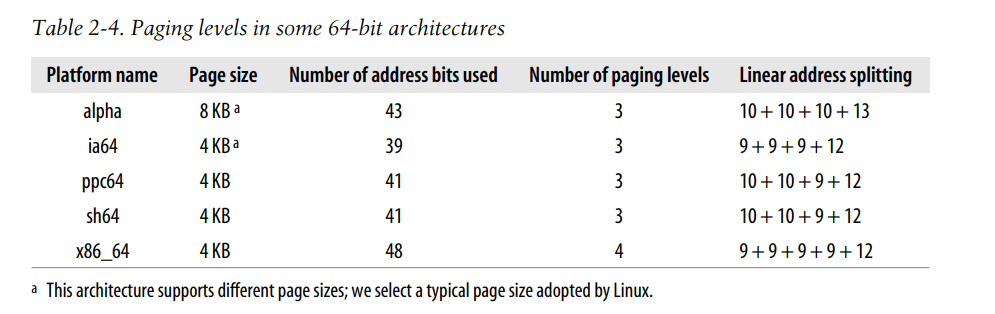
Linux使用了一种通用的分页模型，来支持不同的处理器分页系统
Hardware Cache
当前处理器的时钟频率有好几个GHz,而DRAM芯片的访问时间是好几百个时钟周期。因此，当指令需要访问内存时，CPU需要空等很长时间。
为了解决这种速度的不匹配，引入了cache。cache的使用基于著名的局部性原理。该原理说的是，CPU访问存储器时，无论是存取指令还是存取数据，所访问的存储单元都趋于聚集在一个较小的连续区域中，当前所访问的内存区域，该区域附近的区域下一次被访问的概率很高。因此，引入了相比DRAM更快，但是也小的多的存储硬件，来存储所访问区域的附近连续区域，这种芯片叫SRAM.
cache存储单元叫做cache line，一个line包括几十个字节，内存和cache之间的数据交换以line为单位。
cache中的line和内存line的映射关系，有3中，一种是一一映射，内存中的line被映射到cache中的固定位置。一种是全相连映射，内存中的line可以被映射到cache中的任意位置。最后是组相连映射，这种映射下，cache中的所有line被分成了多组，一组中有一个或几个line,内存中的line被映射到固定的某一组中的任意line.比如2路组相连，内存中的line,会被映射到某组cache line中的2个cache line中的任意line。
如图所示，cache 单元被插入在页单元和内存之间，包括存储cahce line的硬件单元cache memory和cache controller. cache controller 存储 cache line的控制信息，由一组entries组成，每个entry对应一个cache line,包括 tag 和一些cache line的状态标志。tag标志存储映射到该cache line的内存line的地址信息的前面部分bits,用于识别具体是哪条内存line映射到此处。内存的物理地址，在cache和内存之间的映射关系下，被分为了3个部分，最高几个bit对应tag,中间区域对应cache组的index,最后的几个bit对应该地址在line中的偏移。
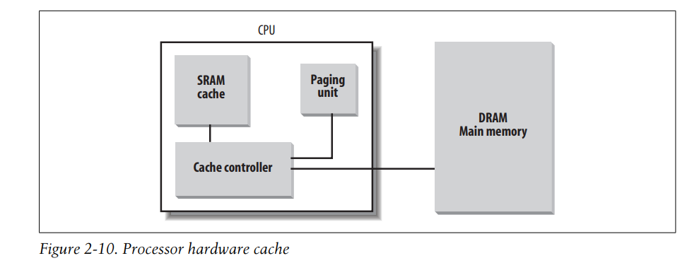
当访问RAM内存单元时，cpu首先将物理地址中的cache组的索引取出来，并且将该组中所有line控制信息中的tag与物理地址的tag部分相比较，如果有某个line的tag是匹配的，则称为cache hit,否则是cache miss. 当cache hit发生时，如果是读操作，则cache controller将从该cache line中获取需要的数据，给cpu的寄存器。如果是写操作，controller可能会采取两种策略，write-through和write-back。write through会写cache line和RAM,而write back只写cache line,当然，最终RAM还是需要更新的，要么是cpu执行一条cache entries flush 的指令，要么是当cache miss发生时，cache controller会发出FLUSH中断信号。 当cache miss发生时，读操作下只能从RAM读了，写操作也只能写到RAM中，同时有必要的话，访问的line会被读取到cache中 多处理器系统下，每个处理器都有自己的cache,因此需要额外的硬件电路来做cache同步。 如图所示，当一个cpu需要写自己的cache时，它还需要检查所写的cache line是否在别的cpu的cache中，如果是的话，它需要通知该cpu来更新自己的cache.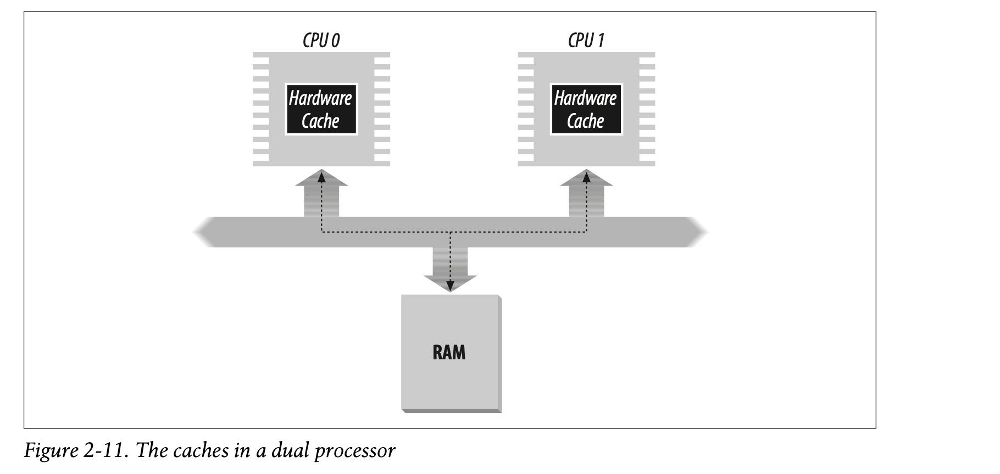
cache技术发展的很快，最开始的奔腾处理器只有一个L1 cache，最近的处理器已经有了L2-cache,L3-cache等等，这些不同层的cache之间的同步，也是硬件层实现的 cr0控制寄存器的CD flag用来enable or disable cache circuitry,NW flag用来控制cache的写策略 奔腾处理器的cache另外提供了一个功能，可供操作系统将cache管理关联到具体的每一页。页目录项和页表项中的PCD (Page Cache Disable),和PWT(Page Write-Through)这两个标志就是用来控制，在访问这一页数据时，是否关闭cache功能，以及写这页数据时，是否采用write-through策略。Linux将这两个标志都清空了，意味着linux的所有页的访问，都使用cache功能，以及写页面时，都使用write-back策略。Translation Lookaside Buffers (TLB)
80x86处理器中的TLB cache,用来加速线性地址到物理地址的转换。 当某个线性地址第一次被访问时，需要分页单元访问内存中的页表，来做地址转换，转换后的物理地址和线性地址之间的对应关系，被存储到TLB中，之后的访问就不再需要做计算了。 每个cpu都有自己的TLB,这个TLB不需要做同步。因为运行在每个cpu上的进程，其线性地址与物理地址的对应关系本就不同。当cr3控制寄存器被更改了，也就是页表的最顶层表被更改了之后，硬件需要自动将TLB中内容清空。
Paging in Linux
Linux采用了一种通用的分页模型，来适应32位和64位处理器。2.6.11版本的内核采用的是4级页表结构，如图所示：
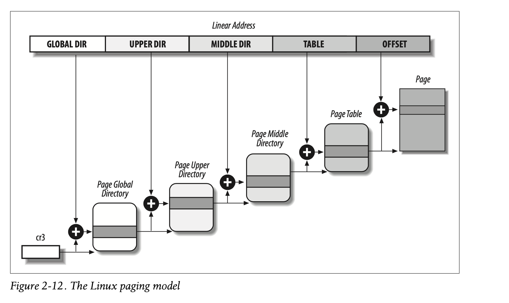
这4级页表分别叫做- Page Global Directory
- Page Upper Directory
- Page Middle Directory
- Page Table
因此，线性地址可被最多分成5个部分。 每个部分具体的位数，是根据硬件平台决定的。 对于32位cpu,没有采用物理地址扩展，2级页表足够了。page upper directory和page middle directory 地址部分的位数是0.
如果32位cpu采用了物理地址拓展，则使用3层页表，Page Global Directory对应80 × 86’s Page Directory Pointer Table,the Page Middle Directory corresponds to the 80 × 86’s Page Directory，the Linux’s Page Table corresponds to the 80 × 86’s Page Table.
最后，如果是64位处理器，要么使用3层，要么使用4层页表，取决于具体的平台。
每个进程都有自己的一组页表，当进程切换发生时，需要将cr3控制寄存器中的数据存储到被切换进程的进程描述符中，加载新的进程的Page Global Directory的物理地址到cr3中。
Physical Memory Layout
在系统初始化阶段，内核必须知道哪些物理内存区域（物理内存区域包括RAM和ROM）是可用的，哪些是不可用的。不可用区域，要么是内存映射I/O区域，要么是存储了BIOS数据或其他固件信息。
内存映射I/O区域是指那些被用来与外部设备进行通信的内存地址空间。这些内存地址并不是用来存储数据的，而是作为输入/输出（I/O）操作的接口。在早期的计算机设计中，为了与外设通信，CPU会通过特定的地址范围来访问这些设备，这种方式被称为内存映射I/O。
在内存映射I/O中，每个外设都有一个或多个与之关联的内存地址。当CPU读写这些地址时，实际上是在与外设进行交互，而不是访问物理内存。这种设计简化了系统架构，因为所有的I/O操作都可以通过标准的内存访问指令来完成。
然而，这些被映射给外设的地址范围就不能被用作普通的物理内存。因此，在系统初始化阶段，内核需要识别并标记这些地址范围，确保它们不被内存管理子系统错误地分配给程序使用。
此外，还有一些内存区域可能存储了BIOS数据或其他固件信息（通常存储在ROM中），这些区域也需要被标记为不可用，以防止被覆盖。
内核将以下的page frames视为reserved(保留的)：
- 不可用物理内存区域的page frames
- 包含内核代码和数据的page frames
被视为保留的页框中的页面，是不能被动态分配和swap到磁盘上的。
通常情况下，linux kernel 被加载到物理内存0x00100000开始的位置。也就是1M物理页面处。而linux kernel需要的内存大小，根据配置决定。通常所需的大小在3MB之内。
下图展示了RAM前3M的内存使用，kernel代码和数据从第二MB开始存储。_text符号地址为0x00100000，为内核代码的开始地址，_etext符号表示内核代码的结束处。已初始化的数据开始于_etext之后，结束于_edata。未初始化的数据在_edata之后，结束于_end.
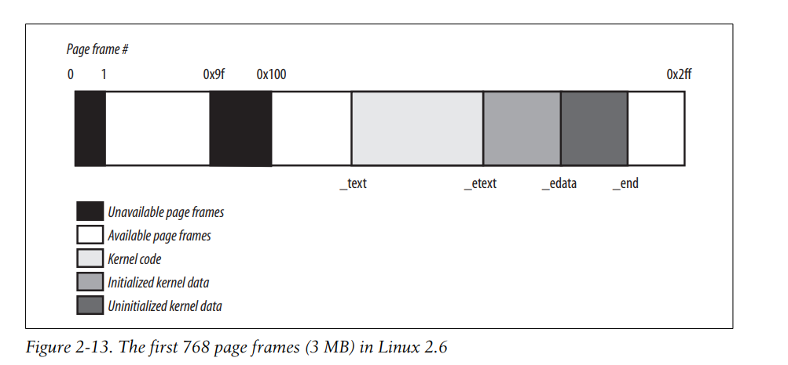
在系统初始化阶段，内核需要知道RAM各段区域的使用情况，这通常是通过BIOS获知的，然后内核建立一张physical addresses map，如下图
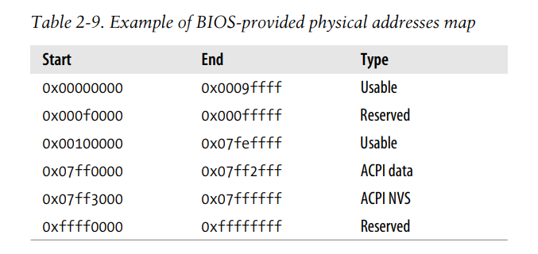
这是128MB RAM的典型配置。 0x07ff0000 - 0x07ff2fff这段内存存储BIOS在POST阶段写入的系统硬件设备信息。在系统初始化阶段，内核将这块内存信息拷贝到某个kernel data structure中，然后这块物理内存的page frames被视为可用。 0x07ff3000 to 0x07ffffff 被映射到ROM chips of the hardware devices. 0xffff0000 - 0xffffffff mapped by the hardware to the BIOS’s ROM chip 对于没有被列出的物理内存区域，比如0x000a0000 to 0x000effff，linux内核也认为不可用。
而如果列出的内存大于内核可寻址的空间，比如32bit x86没有enable PAE,则物理地址位数为32bit，最多寻址4GB的物理内存。如果RAM大于4GB，多余的空间也是无法使用的。
在获取到这张表之后，内核会调用setup_memory( )函数，初始化跟物理内存相关的全局变量。
num_physpages： 这个变量表示系统中的RAM页帧总数。
totalram_pages： 这个变量代表所有可用的RAM页数。
min_low_pfn： 这个变量表示低端内存区域的起始页帧号（Page Frame Number, PFN）。低端内存是指那些可以直接通过线性映射访问的内存区域，通常包括从0开始的物理内存。
max_pfn： 这个变量代表系统中最高物理页帧号。它定义了物理内存的上界。
max_low_pfn： 这个变量表示低端内存区域的结束页帧号。低端内存通常直接映射到内核的地址空间，易于管理和访问。
totalhigh_pages： 这个变量代表高端内存区域的页数。
highstart_pfn： 这个变量表示高端内存区域的起始页帧号。
highend_pfn： 这个变量表示高端内存区域的结束页帧号。
这些变量帮助Linux内核在启动时建立内存管理的基础结构，并在整个系统运行期间用于内存分配和管理。
Process Page Tables
一个进程的线性地址空间被分为2个区域
- 0x00000000-0xbfffffff，这一区域可以被用户态或者内核态访问。
- 0xc0000000-0xffffffff，这一区域只能被内核态访问。
PAGE_OFFSET宏等于0xc0000000
进程的顶级页表，Page Global Directory 中，如果PAE disabled，其前768页表项，或者PAE enabled,前3个页表项，每个进程都不相同，而剩余的页表项是相同的，都与master kernel Page Global Directory中相应的页表项一样。
Kernel Page Tables
内核也需要给自己维护一组页表。顶级页表叫做master kernel Page Global Directory。
当系统初始化好了后，这组页表不会被任何进程或者kernel thread使用，进程或者kernel thread使用的页表是自己的，但是其中Page Global Directory中的内核地址空间的目录项与master kernel Page Global Directory中相应的项相同。
内核如何初始化自己的页表，这是通过2部完成的。
当kernel image被加载到内存中后，cpu仍然运行在real mode，paging unit is not enabled.
在第一步中，内核初始化部分地址空间，这部分地址空间包括内核代码段，数据段，存储页表的空间，和128KB的动态数据空间，用于存储早期启动期间需要的一些数据结构。
在第二步中，内核才会将所有的内核地址空间初始化好。
Provisional(临时的) kernel Page Tables
swapper_pg_dir这个变量中存储master kernel Page Global Directory,其存储在bss段中，是零初始化的。
然后内核会运行startup_32()这个函数初始化master kernel Page Global Directory
ENTRY(startup_32)
/*............*/
/*
* Initialize page tables. This creates a PDE and a set of page tables, which are located immediately beyond _end. The variable
* init_pg_tables_end is set up to point to the first "safe" location.
* Mappings are created both at virtual address 0 (identity mapping)
* and PAGE_OFFSET for up to _end+sizeof(page tables)+INIT_MAP_BEYOND_END.
*
*/
/*.....代码都是汇编写的*/
PAE support is not enabled at this stage.
provisional Page Global Directory 存储在swapper_pg_dir这个全局变量中。而provisional Page Tables 存储在pg0，pg1中。right after the end of the kernel’s uninitialized data segments。
我们假设到目前为止，kernel code, kernel data,the provisional Page Tables,and the 128 KB memory area all fit in the first 8 MB of RAM.为了映射这部分物理内存，需要2张页表。
这第一步的目标，就是使这8MB的内存，既能在real mode下访问，也能在protected mode下访问。因此，我们需要将这8MB的物理内存，映射到线性地址的0x00000000-0x007fffff和0xc0000000-0xc07fffff这两段中。
swapper_pg_dir 这个变量的entries，除了第0，1，768，769 entries被初始化了之外，其他的entries都是0.
entries 0和768，其中的页表物理地址指向pg0,存储第一张页表的地址。entries 1和769，其中的页表物理地址指向pg1
startup_32()函数在初始化好临时的page tables之后，会enables paging unit，代码如下
movl $swapper_pg_dir-0xc0000000,%eax
movl %eax,%cr3 /* set the page table pointer.. */
movl %cr0,%eax
orl $0x80000000,%eax
movl %eax,%cr0 /* ..and set paging (PG) bit */
将swapper_pg_dir 的物理地址加载到cr3寄存器中，再将cr0 的PG flag设置。
Final kernel Page Table
master kernel Page Global Directory 仍然存储在swapper_pg_dir变量中，由paging_init( )函数初始化。
- Invokes pagetable_init() to set up the Page Table entries properly.
- Writes the physical address of swapper_pg_dir in the cr3 control register
- If the CPU supports PAE and if the kernel is compiled with PAE support, sets the PAE flag in the cr4 control register.
- Invokes __flush_tlb_all() to invalidate all TLB entries.
其中第一步pagetable_init()的步骤，取决于RAM的大小，和cpu.
之前说过，内核地址空间为1G，如果我们线性映射物理地址，则最多映射1G的物理地址，剩下的物理内存无法访问。因此，内核将物理地址分为低地址和高地址，低地址部分线性映射，高地址部分动态映射。
如果物理内存小于896M，则全部是直接映射的。 如果物理内存大于896M,则剩下的高地址部分内存为动态映射。
现在假设最简单的情况，我们的RAM less than 896MB,可以被内核地址全部直接映射。
The swapper_pg_dir Page Global Directory is reinitialized by a cycle equivalent to the following:
pgd = swapper_pg_dir + pgd_index(PAGE_OFFSET); /* 768 */
phys_addr = 0x00000000;
while (phys_addr < (max_low_pfn * PAGE_SIZE)) {
pmd = one_md_table_init(pgd); /* returns pgd itself */
set_pmd(pmd, _ _pmd(phys_addr | pgprot_val(_ _pgprot(0x1e3))));
/* 0x1e3 == Present, Accessed, Dirty, Read/Write,
Page Size, Global */
phys_addr += PTRS_PER_PTE * PAGE_SIZE;
++pgd;
}
注意这段代码中，PS标志被设置了，因此一页的大小是PTRS_PER_PTE * PAGE_SIZE（4MB）,只使用Page Global Directory映射地址空间即可。
可以看到,线性地址0xc0000000之上的最多896MB的地址空间，一一映射到从0x00000000开始的物理地址空间。
Final kernel Page Table when RAM size is between 896 MB and 4096 MB
In this case, the RAM cannot be mapped entirely into the kernel linear address space. The best Linux can do during the initialization phase is to map a RAM window of size 896 MB into the kernel linear address space. If a program needs to address other parts of the existing RAM, some other linear address interval must be mapped to the required RAM
前896 MB 内存的映射和之前的一样
Final kernel Page Table when RAM size is more than 4096 MB
如果以下条件都满足
- The CPU model supports Physical Address Extension (PAE).
- The amount of RAM is larger than 4 GB.
- The kernel is compiled with PAE support.
这时候32位线性地址映射到36位物理地址。也就是支持的最大物理内存为64GB. 但线性地址还是32位，内核地址空间只有1G,内核依旧如之前一样，直接映射896M的RAM内存到内核地址空间中。 the remaining RAM is left unmapped and handled by dynamic mapping
和之前的主要不同，现在需要使用三级页表（PAE），所以master kernel Page Global Directory的初始化如下
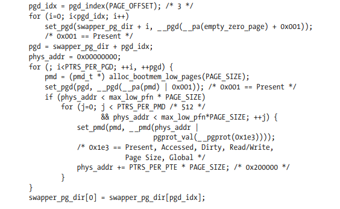
可以看到，这时候使用了两张页表，一张是page globla directory, 一张是page middle directory. 依旧使用large page内核首先将kernel Page Global Directory 的前3项零初始化
第4个PGD目录项，其中存储的物理地址，指向分配的PMD.这个PMD中的前448项，其中的物理地址，指向RAM的前896MB。最后的64项，reserved for noncontiguous memory allocation.
最后一行的代码，将PGD中的第四个entry的内容，拷贝到第一个entry。这样虚拟内存地址的前896M也映射到物理地址的前896M, 这种映射是为了完成对称多处理器系统的初始化。This mapping is required in order to complete the initialization of SMP systems。当初始化完成后，这个目录项会被复原。
Kernel Mappings of High-Memory Page Frames
896m 之上的RAM叫做high memory，这些内存并没有被内核线性地址空间在初始化阶段直接映射，而是运行时动态映射的。
但如果是64位cpu,其内核线性地址空间完全可以覆盖所有的RAM, 则内核线性地址空间在初始化阶段都全部设置好了。所有的内存都是直接映射的。
high memory的映射，有3种方式，Fix-Mapped Linear Addresses ，permanent kernel mapping，noncontiguous memory allocation。
如果所示，最顶层的部分线性地址空间为Fix-Mapped Linear Addresses， 然后是permanent kernel mapping， 最后部分用于noncontiguous memory allocation
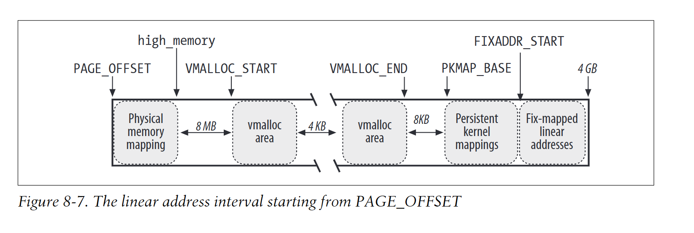
Fix-Mapped Linear Addresses
内核线性地址的最开始部分的线性地址称为Fix-Mapped Linear Addresses。
Each fix-mapped linear address is represented by a small integer index defined in the enum fixed_addresses data structure:
enum fixed_addresses {
FIX_HOLE,
FIX_VSYSCALL,
FIX_APIC_BASE,
FIX_IO_APIC_BASE_0,
[...]
_ _end_of_fixed_addresses
};
The fix_to_virt() function computes the constant linear address starting from the index:
inline unsigned long fix_to_virt(const unsigned int idx)
{
if (idx >= _ _end_of_fixed_addresses)
_ _this_fixmap_does_not_exist();
return (0xfffff000UL - (idx << PAGE_SHIFT));
}
为了将物理地址映射到某个fix-mapped linear address，内核调用set_fixmap(idx,phys)和set_fixmap_nocache(idx,phys)这个宏。这两个函数都是将fix_to_virt(idx)这个线性地址在内核页表中的相应项的物理地址设置为phys.第二个函数同时会设置页表项的PCD标志，该页面不使用cache。clear_fixmap(idx)这个宏将该映射关系清空。
Permanent kernel mappings
这种映射方式创建的线性地址和page frame映射是long-lasting的，使用一个专门用于这种映射的page table,pkmap_page_table存储该table的地址，LAST_PKMAP宏存储其中的entries数量，要么是512，要么是1024，能映射的线性地址空间，要么是2M,要么是4M.PKMAP_BASE宏为这种映射方式映射的线性地址空间的起始地址。
pkmap_countarray 包括 LAST_PKMAP个数组项，每个数组项对应一个page table entry,值如下
- The counter is 0
The corresponding Page Table entry does not map any high-memory page frame and is usable.
- The counter is 1
The corresponding Page Table entry does not map any high-memory page frame, but it cannot be used because the corresponding TLB entry has not been flushed since its last usage
- The counter is n (greater than 1)
The corresponding Page Table entry maps a high-memory page frame, which is used by exactly n − 1 kernel components
内核使用page_address_htable这个hash table来记录high memory page frames和liner address的对应关系，主要是可以通过这个数据结构，知道某个high memory page frame是否被映射到了某个线性地址。如果被映射了，hash table中存储一个page_address_mapdata structure,其中存储页描述符type page的指针和线性地址。（内核使用页描述符描述一页物理页，所有的物理页的页描述符在内核初始化阶段就设置好了）
page_address()，输入页面描述符的指针，返回该页面的线性地址。如果该页面处于high_memory并没有被映射，返回NULL
kmap()函数会创建permanent kernel mapping,其代码逻辑基本如下
void * kmap(struct page * page)
{
if (!PageHighMem(page))
return page_address(page);
return kmap_high(page);
}
如果page frame 处于high memory,则会调用kmap_high()
void * kmap_high(struct page * page)
{
unsigned long vaddr;
spin_lock(&kmap_lock);
vaddr = (unsigned long) page_address(page);
if (!vaddr)
vaddr = map_new_virtual(page);
pkmap_count[(vaddr-PKMAP_BASE) >> PAGE_SHIFT]++;
spin_unlock(&kmap_lock);
return (void *) vaddr;
}
map_new_virtual()如下，基本是两个大循环
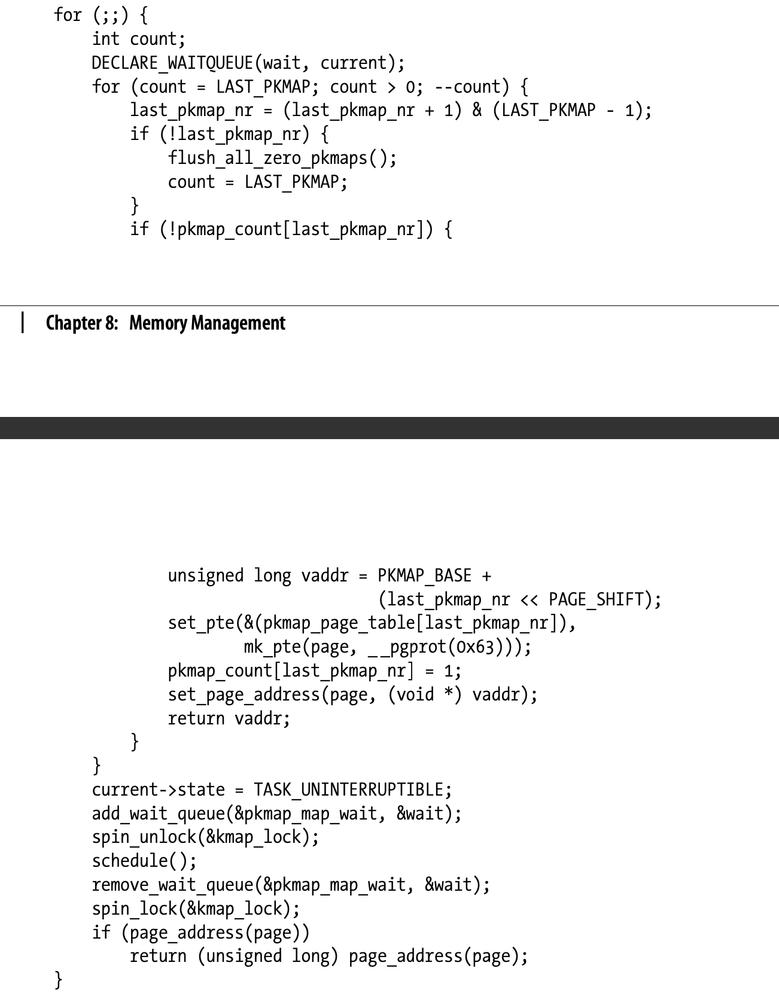
在内循环中，for函数扫描所有的page table entries,直到发现没有被使用的entry. 其中的if代码块，就是发现没有使用的entry,也就是pkmap_count[last_pkmap_nr]==0时的处理。获取该entry对应的线性地址，给pkmap_page_table Page Table中的这个entry设置值，将pkmap_count[last_pkmap_nr]设置为1，最后调用set_page_address()给page_address_htable hash table 插入新的元素，返回线性地址。
这个内部的for循环，开始于last_pkmap_nr这条entry处，这个变量中存储了上次扫描到的位置。
When the last counter in pkmap_count is reached, the search restarts from the counter at index 0. Before continuing, however, map_new_virtual() invokes the flush_all_zero_pkmaps() function, which starts another scan of the counters, looking for those that have the value 1. Each counter that has a value of 1 denotes an entry in pkmap_page_table that is free but cannot be used because the corresponding TLB entry has not yet been flushed. flush_all_zero_pkmaps() resets their counters to zero, deletes the corresponding elements from the page_address_htable hash table, and issues TLB flushes on all entries of pkmap_page_table. If the inner loop cannot find a null counter in pkmap_count, the map_new_virtual() function blocks the current process until some other process releases an entry of the pkmap_page_table Page Table. This is achieved by inserting current in the pkmap_map_wait wait queue, setting the current state to TASK_UNINTERRUPTIBLE, and invoking schedule() to relinquish the CPU. Once the process is awakened, the function checks whether another process has mapped the page by invoking page_address(); if no other process has mapped the page yet, the inner loop is restarted.
kunmap()函数会取消为该page frame创建的permanent mapping。 如果该页面真的在high memory中，则会调用kunmap_high()函数
void kunmap_high(struct page * page)
{
spin_lock(&kmap_lock);
if ((--pkmap_count[((unsigned long)page_address(page)-PKMAP_BASE)>>PAGE_SHIFT]) == 1)
if (waitqueue_active(&pkmap_map_wait))
wake_up(&pkmap_map_wait);
spin_unlock(&kmap_lock);
}
由此可见，permanent kernel mappings可能会阻塞当前进程，不可用于interrupt handlers和deferrable functions中
noncontiguous memory allocation
如果所示，最后剩下的线性空间就是用于非连续内存映射了。 在VMALLOC_START和VMALLOC_END之间。
每个分配的线性地址空间由vm_struct描述符表示，其对应的物理页面可以是不连续的。
Linux在好几种情况下会使用非连续内存映射，to allocate data structures for active swap areas(see the section “Activating and Deactivating a Swap Area” in Chapter 17), to allocate space for a module (see Appendix B), or to allocate buffers to some I/O drivers.
Descriptors of Noncontiguous Memory Areas
每个非连续映射区，都由描述符 vm_struct表示，其字段如下
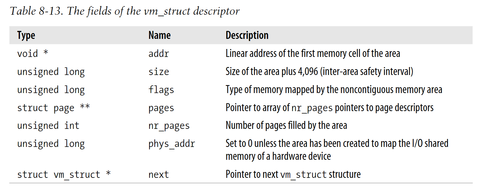
这些描述符通过next字段连成链表。该链表的头结点地址存储在 vmlist 变量中。 vmlist_lock read/write spin lock提供对该链表并发访问的读写保护。flags字段表示其映射的page frames类型，VM_ALLOC说明page frames是通过调用vmalloc()函数获得的，这些page frames一定是新分配的。VM_MAP的映射是通过vmap()获得的，其中的page frames可能已经分配过了。 VM_IOREMAP for on-board memory of hardware devices mapped by means of ioremap()，比如显卡内存的映射，可能就是调用的ioremap()
get_vm_area()函数从VMALLOC_START 和VMALLOC_END之间找到一块线性地址空间可满足需要映射的大小。
其参数有2个，size in bytes 表示需要映射的大小。 flag表示映射的类型，是VM_ALLOC,VM_MAP,还是VM_IOREMAP，其步骤如下
调用kmalloc(),获取连续内存区域，用于存储vm_struct描述符
获取vmlist_lock写锁，扫描链表，looking for a free range of linear addresses that includes at least size+4096 addresses (4096 is the size of the safety interval between the memory areas).
If such an interval exists, the function initializes the fields of the descriptor, releases the vmlist_lock lock, and terminates by returning the address of the descriptor
Otherwise, get_vm_area( ) releases the descriptor obtained previously, releases the vmlist_lock lock, and returns NULL.
Allocating a Noncontiguous Memory Area
vmalloc()函数用于分配非连续内存映射区。size表示需要的大小。如果能满足要求，返回该内存映射区的起始线性地址，否则返回NULL
void * vmalloc(unsigned long size)
{
struct vm_struct *area;
struct page **pages;
unsigned int array_size, i;
size = (size + PAGE_SIZE - 1) & PAGE_MASK;
area = get_vm_area(size, VM_ALLOC);
if (!area)
return NULL;
area->nr_pages = size >> PAGE_SHIFT;
array_size = (area->nr_pages * sizeof(struct page *));
area->pages = pages = kmalloc(array_size, GFP_KERNEL);
if (!area->pages) {
remove_vm_area(area->addr);
kfree(area);
return NULL;
}
memset(area->pages, 0, array_size);
for (i=0; i<area->nr_pages; i++) {
area->pages[i] = alloc_page(GFP_KERNEL|_ _GFP_HIGHMEM);
if (!area->pages[i]) {
area->nr_pages = i;
fail: vfree(area->addr);
return NULL;
}
}
if (map_vm_area(area, _ _pgprot(0x63), &pages))
goto fail;
return area->addr;
}
这个函数中最复杂的步骤就是page frames的映射，由map_vm_area()函数完成。 其参数如下：
area: pointer to vm_struct
prot: page frames的protection bits: Present, Accessed, Read/Write, and Dirty
pages: struct page *
该函数首先将虚拟内存区域的起始地址和结束地址赋给address,end两个local variables
address = area->addr;
end = address + (area->size - PAGE_SIZE);
然后获取起始地址address在master kernel Page Global Directory 中对应的页全局目录项，通过pgd_offset_k宏获取。
pgd = pgd_offset_k(address);
it then acquires the kernel Page Table spin lock
spin_lock(&init_mm.page_table_lock);
The function then executes the following cycle:
int ret = 0;
for (i = pgd_index(address); i < pgd_index(end-1); i++) {
pud_t *pud = pud_alloc(&init_mm, pgd, address);
ret = -ENOMEM;
if (!pud)
break;
next = (address + PGDIR_SIZE) & PGDIR_MASK;
if (next < address || next > end)
next = end;
if (map_area_pud(pud, address, next, prot, pages))
break;
address = next;
pgd++;
ret = 0;
}
spin_unlock(&init_mm.page_table_lock);
flush_cache_vmap((unsigned long)area->addr, end);
return ret;
在每次循环中，首先分配一页page upper directory,并将该页表的物理地址填入对应的pgd中,返回page upper directory中address对应的pud.然后调用map_area_pud()，设置page upper directory中每一项对应的page middle directory
map_area_pud执行一个循环，如下
do {
pmd_t * pmd = pmd_alloc(&init_mm, pud, address);
if (!pmd)
return -ENOMEM;
if (map_area_pmd(pmd, address, end-address, prot, pages))
return -ENOMEM;
address = (address + PUD_SIZE) & PUD_MASK;
pud++;
} while (address < end);
map_area_pmd( ):
do {
pte_t * pte = pte_alloc_kernel(&init_mm, pmd, address);
if (!pte)
return -ENOMEM;
if (map_area_pte(pte, address, end-address, prot, pages))
return -ENOMEM;
address = (address + PMD_SIZE) & PMD_MASK;
pmd++;
} while (address < end);
pte_alloc_kernel分配对应的页表，并将物理地址填入对应的pmd中。 然后，map_area_pte将该页表中所有的页表项设置好，关联到相关的page frames. map_area_pte( )的循环如下
do {
struct page * page = **pages;
set_pte(pte, mk_pte(page, prot));
address += PAGE_SIZE;
pte++;
(*pages)++;
} while (address < end);
需要注意的是，这里只设置了master kernel page table,当前进程的页表并没有被设置。所以，如果某个进程在kernel mode之下，访问了非连续内存区域，则会产生page fault, page fault handler会将master kernel global directory 中对应的表项拷贝过去。
Linux 2.6 also features a vmap() function, which maps page frames already allocated in a noncontiguous memory area: essentially, this function receives as its parameter an array of pointers to page descriptors, invokes get_vm_area() to get a new vm_struct descriptor, and then invokes map_vm_area() to map the page frames. The function is thus similar to vmalloc(), but it does not allocate page frames.
Releasing a Noncontiguous Memory Area
vfree()函数释放vmalloc()分配的page frames和映射的虚拟地址区域。vummap()函数释放vmap()映射的虚拟地址区域。
这两个函数的参数就是the address of the initial linear address of the area to be released，they both rely on the _ _vunmap() function to do the real work.
__vunmap()函数的参数，1是起始的线性地址，2是flag，表示是否需要释放page frames回zoned page frame allocator. vfree设置这个flag，vummap不设置。
该函数的执行步骤如下
调用remove_vm_area()函数，该函数获取线性地址对应的vm_struct描述符，并且清除相应的kernel page table entries
如果设置了deallocate_pages flag，对area->pages数组中的每个page,调用__free_page()释放。执行kfree()释放array itself
Invokes kfree(area) to release the vm_struct descriptor.
需要注意的是，第一步中的清除页表项操作，只是将最后page table中的每一项pte清空，而page middle,page upper,pgd中的页表项不变，并且kernel page tables的页面也不会reclaim
For instance, suppose that a process in Kernel Mode accessed a noncontiguous memory area that later got released. The process’s Page Global Directory entries are equal to the corresponding entries of the master kernel Page Global Directory, thanks to the mechanism explained in the section “Page Fault Exception Handler” in Chapter 9; they point to the same Page Upper Directories, Page Middle Directories, and Page Tables. The unmap_area_pte() function clears only the entries of the page tables (without reclaiming the page tables themselves). Further accesses of the process to the released noncontiguous memory area will trigger Page Faults because of the null page table entries. However, the handler will consider such accesses a bug, because the master kernel page tables do not include valid entries.